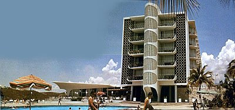
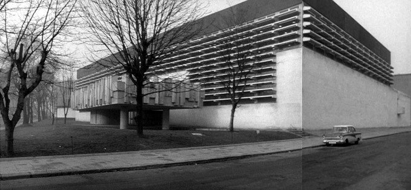

|
< |
|
THE FOLLOWING LOCATIONS HAVE BEEN FOUND
PAGE 0
H. G. WELLS'
INVISIBLE MAN: Man In Disguise (Quentin Lawrence/Peter Maxwell: 1959)
A504
The Burroughs NW4, turning onto A41 Watford Way - The ambulance carries the badly injured
Invisible Man to a nearby apartment block.
(Identified by Alan Field, May 2009)


STRANGE
REPORT: Report 3424 Epidemic: 'A
most curious crime'
(Daniel Petrie: October/November 1968)
Gloucester Terrace, W2 Nr Corner
of Lancaster Terrace–
Adam Strange (Anthony Quayle) takes Zeba (Zienia
Merton) in his taxi to the hospital (10 Gloucester Terrace, the building has
been redeveloped) where Ham is suffering from cholera. They are met by an
intern (Raymond Armstrong) who shows them in.
(Identified by Peter Astaire, May 2009)


DEPARTMENT S:
A Cellar Full of Silence (John Gilling: June 1968)
King Henry's Road, NW3: London
June 20th – a Landover carrying four characters in fancy dress speed
through the streets.
(Identified by Geoff Dodd, February 2009)

Kings College Mews East, Kings College Road, NW3: They arrive at a building about to
be demolished.
(Identified by Geoff Dodd, February 2009)

Geoff Dodd, 17th February 2009 - A R Franklin, sound equipment manufacturers, 6 Kings College Mews East, Kings College Road, NW3. It was demolished in 1968 and I've got someone to send me a contemporary map scan as it doesn't feature on mine, in UK3 they are travelling along what is now Hawtrey Road making UK1 King Henry's Road, although the distinctive building on the junction has also gone with a house now in it's place.
Avenue Road, NW8: Annabelle goes back to the Tronson’s house to have a private conversation with Libby
Spear.
(Identified by Geoff Dodd, February 2009)

THE SAINT: The High Fence (James Hill: December 1963)
Norrice Lea/ Winnington Road roundabout - After
finding that they have left the theatre tickets behind Simon does a U-turn to
return back to the house with Gabrial.
(Identified by Geoff Dodd, May 2009)

Winnington Road, N2 - Simon
chases after Anworth and Fasson.
(Identified by Geoff Dodd, May 2009)


Holne Chase N2 turning into
Rowan Walk - Simon chases after Anworth and Fasson.
(Identified by Geoff Dodd, May 2009)


Norrice Lea/ Winnington Road roundabout - Simon chases after Anworth and Fasson.

Winnington Road - Simon has to give up the chase when his tyres are shot out and he watches Anworth and Fasson drive away.

Dean Street, W1 - Pryor and
Teal leave Mrs Ainsworth and discuss the case on the way back to Scotland Yard.
Later the same back projection is used, Simon Templar drives Gabriel Forest to the Kosey Korner Café in his
Volvo, but they also
make a right hand turn into a connecting street.
(Identified by Peter Astaire, May 2009)


THE NEW AVENGERS: The Three Handed Game (Ray
Austin: 1976)
Peek Crescent, SW19 – Gambit (Gareth
Hunt) and Purdey (Joanna Lumley) steak out the embassy building where Juventor (David
Greif) and Colonel Meroff
(Terry Wood) are plotting their next move. They are joined by Larry (Michael Petrovitch) in his
white van. The two Russians make their escape in a green Jaguar and Larry gives
chase.
(Identified by Alan Field, May 2009)


THE NEW AVENGERS: Angles of Death
South Bucks
District Council offices, Bridge Road, Maidenhead – The Ministry Building


 Mark Pond, June,
2008 - This location was South Bucks District Council offices in Slough. The
building was demolished for flats three years ago. They were on the Windsor
Road, the same side of the road as Slough Police Station. The post code is SL6
8LP. They were on the corner of a junction with the police station 100-200yds
further down.
Mark Pond, June,
2008 - This location was South Bucks District Council offices in Slough. The
building was demolished for flats three years ago. They were on the Windsor
Road, the same side of the road as Slough Police Station. The post code is SL6
8LP. They were on the corner of a junction with the police station 100-200yds
further down.
THE NEW AVENGERS: The Tale of the Big Why
E12: Middle Assendon: After leaving the prison, Bert
Brendon drives past this pub he is followed by Purdey on her motorbike.
(Identified by James Webster, September 2009)


 James Webster: “The Rainbow Inn in
Middle Assendon,
Oxfordshire. I was standing behind the camera as they filmed it. My next door neighbour
claimed he drank the beer in the diminishing glass. I was only 6 or 7 but had
never seen a film crew before. Scenes from BBC PENNIES FROM HEAVEN were also filmed on this same road
between Middle Assendon
and Stonor
(scenes with Bob Hoskins in his car and the tramp). Also nearby Bix Bottom was
setting for 'BLOOD ON SATAN'S CLAW'. Both were directed by Piers Haggard. Turville windmill also features heavily
in 'THE
PUMPKIN EATER' ( On telly soon I
think) Think I remember it in VOYAGE ROUND MY FATHER as well.”
James Webster: “The Rainbow Inn in
Middle Assendon,
Oxfordshire. I was standing behind the camera as they filmed it. My next door neighbour
claimed he drank the beer in the diminishing glass. I was only 6 or 7 but had
never seen a film crew before. Scenes from BBC PENNIES FROM HEAVEN were also filmed on this same road
between Middle Assendon
and Stonor
(scenes with Bob Hoskins in his car and the tramp). Also nearby Bix Bottom was
setting for 'BLOOD ON SATAN'S CLAW'. Both were directed by Piers Haggard. Turville windmill also features heavily
in 'THE
PUMPKIN EATER' ( On telly soon I
think) Think I remember it in VOYAGE ROUND MY FATHER as well.”
E6 - Turville, Buckinghamshire: After Irene Brandon shoots out the tyres of the Range Rover, Mike Gambit (Gareth Hunt) and Steed (Patrick Macnee) are left walking cross country looking for a road (walking up hill towards Turville Mill).


E6 - Turville, Buckinghamshire: After Irene Brandon shoots out the tyres of the Range Rover, Mike Gambit (Gareth Hunt) and Steed (Patrick Macnee) accept a lift in a passing farm vehicle (along Holloway Lane).


THE
PROTECTORS: Blockbuster (Jeremy Summers: 1973)
Silver
Street Goffs
Oak: – Villains
Birch (Stanley Meadows) and Slater (Maurice O’Connell) drop off the crushed security
van at country workshop. They are watched by the police Inspector (Peter
Jeffries). After the villains leave Glen Bailey (Christopher Neam) arrives in his
Lotus. The police move in and Bailey attempts to flee. After brief chase he is
captured by Harry Rule (Robert Vaughn).
(Suggested by Sam Denham, confirmed by ‘Stevie Gee’, at the Britmovie Forum)


 Sam Denham “Possibly Burnt Farm Army
Camp in Goff's Oak, Hertfordshire which was used as the major location of the
series TIMESLIP” – see www.timeslip.org.uk
Sam Denham “Possibly Burnt Farm Army
Camp in Goff's Oak, Hertfordshire which was used as the major location of the
series TIMESLIP” – see www.timeslip.org.uk
DEPARTMENT S:
Six Days (Cyril Frankel: July 1968)
Kensington Church Street, W8 – as it
heads towards to Notting Hill Gate Tube station. They turn a corner with shops
on it (Kensington Mall on to Kensington Church Street).
(Identified by Geoff Dodd, February 2009)


Geoff Dodd - I could just about make out Anthony Cooper on one of the shop signs next to the blue car and they were at 186-188 Kensington Church Street
Notting Hill Gate, W11 – as it heads towards to They come to a junction and turn on to a major road (78
Notting Hill Gate at the junction with Pembridge Road W11). Next stop
Notting Hill Gate tube station.
(Identified by Geoff Dodd, February 2009)


Geoff Dodd - The name National is just about visible on the sign and they were at 78 Notting Hill Gate at the junction with Pembridge Road W11, where the Bentley is emerging from.
THE CHAMPIONS: The Fanatics (John Gilling 1967)
Kendal
Street, W2 - Craig
Sterling invites his date to share a penthouse barbeque (corner with Porchester Place).
(Identified by Peter Astaire, May 2009)

Hadley
Green - Sharron
Macready and Craig Sterling trail Richard Barrat into some parkland, but are too
late and see him whisked away in a helicopter.
(Identified by Geoff Dodd, August 2007)


THE CHAMPIONS:
Full Circle (John Gilling: September/October 1967)
Charlbert Court, NW8 - After photographing documents at the Embassay of the Colombrian States
Paul Westerman
(Patrick Allen) runs to a Jaguar parked nearby drives away.
(Identified by Geoff Dodd, May 2009)

RETURN OF THE
SAINT: The Poppy Chain (Charles Crighton: ??)
Lansdowne
Road, W11 – General
Platt (Laurence Naismith) is dropped off at his home by a taxi driver.
(Identified by Alan Field, May 2009)

RETURN OF THE
SAINT: The Arrangement (Peter Medek: ??)
Glebe
Place, SW3 – Otis
(Gregory Munroe) drops a package off at No. 25, the home of Sarah’s sister,
Aileen (Jane Hayden).
(Identified by Alan Field, May 2009)

THE PROTECTORS:
The Big Hit (Roy Ward Baker: 1972)
Cromwell Road SW7 heading into
London with Grenville Place on the left
(Identified by Alan Field, May 2009)

THE
PROTECTORS: Vocal (Cyril Frankel: 1972)
Collingham Road, SW5 - The Contessa di Contini is talking on the phone
to Harry Rule from her Rolls Royce as she is driven through London. Unknown to her, the
conversation is being recorded.
(Identified by Paul Stroud, May 2009)


THE CHAMPIONS: The Invisible Man (Cyril Frankel: April 1967)
Glamis Road, Tower Hamlets,
E1 – Sharron and
Richard race across Rotterdam to the warehouse (film is transposed left to
right).
(Identified by Geoff Dodd, May 2009)


RETURN OF THE
SAINT: The Debt Collectors (Leslie Norman: 1978)
Q25 -
Wood Lane heading towards Stanmore from the A5 Edgware Road - Christine Hansen (Diane Keen)
climbs over the prison wall and drives off with Jimmy Wilson (Bob Sherman) in
his yellow TR7.
(Identified by Geoff Dodd and Victor Hall, August 2009)

THE SAINT: The Scorpion (Roy
Baker: December 1963)
Bouverie Place W2 near the
junction with St Michael's Street, looking towards Star Street - Simon Templar arrives at the Bird
Cage Club in his Volvo.
(Geoff Dodd, September 29th 2009)


Winnington Road, N2 - Eddie Black follows Wilfred Garniman’s car after
it leaves Deverest’s
house (turning into Holne
Chase).
(Identified by Geoff Dodd, May 2009)

THE SAINT: The Powers Artist (Leslie Norman: ??)
Radnor
Place, W2 - Simon
drives Cassie and George, in his Volvo, to visit "Simon Templar".
(Identified by Geoff Dodd, May, 2009)


THE SAINT:
Radnor
Place/Gloucester Square, W2 - The Saint drives through
(Identified by Geoff Dodd, May, 2009)


THE BARON: The Legions of Ammak (John Moxey: August 1965)
Lothbury, EC2 - Ofeg Cossackian (George Murcell) calls in at the International
Trust Bank (41 Lothbury)
to draw out $3,000,000.
(Identified by Marty on the Britmovie Forum, May 2009)

THE BARON: The Edge of Fear
Camley Street, NW1 - Mannering takes a "short
cut" (The Jensen is turns into what is now the entrance to the Saint
Pancras Cruising Club).
(Identified by Geoff Dodd, May 2009)

THE BARON: There's Someone Close Behind You(Roy Baker: December 1965)
Western
Docks, E1
(redeveloped as Kennet Street) – Establishing shot London Docks.

Saint Katherine's
Dock, E1 - Alan
Jordan (Michael Robbins) and Sheldon (Mike Pratt) arrive at the docks looking
for someone who may have overheard their plans. Marty Cranwell (Ken Parry) had already
telephoned Mannering to meet him there. He waits in the shadows while the
villains hunt for him.
(Identified by Geoff Dodd, May 2009)


Hyde Park
Gardens Mews, W2 -
Back entrance of John’s Mannering’s shop. Mannering intends to meet his
would-be assassin without the police interfering. He gets into his car and
drives away.
(Identified by Geoff Dodd, May 2009)

Sussex
Place, W2 -
Mannering leaves his shop in his Jensen to meet with his would-be assassin. As
he expects, the police are following.
(Identified by Christopher Matheson, May 2009)

Gloucester
Terrace W2, approaching the Craven Road junction - Mannering, in his Jensen, finds a sharp
corner where he can lose the policemen who are tailing him.
(Identified by Geoff Dodd, May 2009)


Gloucester
Terrace, NW1 - The
police car drives along this street.
(Identified by Geoff Dodd, May 2009)


Gloucester Gate looking from the Outer Circle junction
towards Albany Street - Then along this street.
(Identified by Geoff Dodd, May 2009)


N45/Gloucester
Terrace, NW1 -
Wilde's gang follows close behind.
(Identified by Geoff Dodd, May 2009)


N45: Chester Road/ Balmoral
Drive, Borehamwood


Gloucester Terrace, NW1
Warren
Lane/Wood Lane junction, Stanmore - After Wilde's jailbreak Mannering stows away in the yellow van Wilde
is driving to
(Identified by Geoff Dodd, May 2009)

MAN IN A
SUITCASE: The
Cowes
on the Isle of Wight:
McGill watches as Dalby
and Packard return to Corfu from yet another trip into the
(Tony Pendrey
on the Britmovie
Forum, May
2009)

THE AVENGERS: A Sense of History (Peter Graham Scott: January 1966)
Corpus Christi College,
Cambridge: 'St. Bodes'.
(Identified by Geoff Dodd, September 2009)

THE PROTECTORS: Zeke's Blues (Jeremy Summers: 1973)
Mill Hill Circus
A1/A5100: Harry Rule tries to disguise his route to Bradley’s
lair by doubling back on himself at a roundabout, but he his being tracked by a
homing device.
(Identified by Alan Field, May 2009)

Gloucester Road SW7, just south of
Queens Gate Terrace: Having tracked Harry’s
car using a homing beacon, Kasankas
and Patrick now give chase in their car.
(Identified by Alan Field, May 2009)


THE AVENGERS: Legacy of Death (Don Chaffey: July 1968)
N32:
Haberdashers' Aske's
School: Zoltan looks out of
the window of Henley Harrer’s
home as he hears Sidney Street’s car arrive.
(Identified by the Lewy
family, August 2009)

THE AVENGERS: Who's Who??? (John Moxey: April 1967)
Nan-Clark's
Lane, Highwood Hill: Krelmar’s
hideaway where the brain swaps are performed.
(Identified by Geoff Dodd, September 2009)


 Geoff Dodd: “You can see the same
approach road in THE SAINT: Locate and Destroy, about 22' 36 in as Templar steers
the Mercedes out of sight of the following jeep.” The rustic driveway leads
to….
Geoff Dodd: “You can see the same
approach road in THE SAINT: Locate and Destroy, about 22' 36 in as Templar steers
the Mercedes out of sight of the following jeep.” The rustic driveway leads
to….
THE AVENGERS: My Wildest Dream (Robert Fuest: March 1968)
Coach
House, Nan-Clark's Lane, Highwood Hill: Steed and Tara race to Winthrop's
cottage after a tip-off, but where is it? There is a tall chimney on one side
of the building nearest the side where the car is parked. The most obvious
feature, the half-timbered French windows, may only be visible from the garden.
(Identified by Geoff Dodd, September 2009)


 Geoff Dodd: “You can see the same
approach road in THE SAINT: Locate and Destroy, about 22' 36 in as Templar steers
the Mercedes out of sight of the following jeep.
Geoff Dodd: “You can see the same
approach road in THE SAINT: Locate and Destroy, about 22' 36 in as Templar steers
the Mercedes out of sight of the following jeep.
THE AVENGERS: The Interrogators
Sutherland
Avenue, W9 - Tara
King (Linda Thorson) pays an unsuccessful visit to Minnow's home (number
182?) but is too late to stop him from being hurried away by Colonel
Mannering.
(Identified by Geoff Dodd, May 2009)


THE AVENGERS:
Who's Who??? (John Moxey: April 1967)
After escaping from the stilt factory Steed and Mrs Peel drive to Steed’s flat
in the Bentley.


Later Tulip chases after Steed and Mrs Peel in his Bentley as they make their way to Mrs Peel’s


 Looks like these
were all shot around the same small area where town meets country
Looks like these
were all shot around the same small area where town meets country
THE AVENGERS: Escape in Time (John Krish: September 1966)
Clipper
Down, Beacon Road, Ashridge - Vesta lures Mrs Peel (Diana Rigg) into a field
with a stuffed crocodile where she is attacked by a huntsman on a motorcycle
(Rocky Taylor). Mrs Peel tricks the motorcyclist in to driving over steep drop
and he runs off after his motorbike catches fire.


THE AVENGERS: The Bird Who Knew
Too Much (Roy Rossotti: October
1966)
Clipper
Down, Beacon Road, Ashridge - Verret (Michael Coles) and Robin
(Clive Colin-Bowler) Villains spy on Muswells Back.

THE AVENGERS: The Forget-Me-Knot (James Hill: December 1967)
Gas
Works at on
The Vitrium
Glass Works – the current hideout for the villains carrying out tests on the
amnesia weapon.
(Identified by Dave Rogers, 1989)


 Ian Beazley
http://homepage.ntlworld.com/avenger98, March 2005 – “I’ve just found out that the
final scenes of the Avengers episode The-Forget-Me-Knot were shot at the old 'Two Waters
Gas Works' in Hemel Hempstead.” This confirms the documentation provided by
Dave Rogers for Mike Richardson’s initial Avengerland research in 1989”.
Ian Beazley
http://homepage.ntlworld.com/avenger98, March 2005 – “I’ve just found out that the
final scenes of the Avengers episode The-Forget-Me-Knot were shot at the old 'Two Waters
Gas Works' in Hemel Hempstead.” This confirms the documentation provided by
Dave Rogers for Mike Richardson’s initial Avengerland research in 1989”.
Chris Bentley, 2007 suggests The Watford Gas & Coke Works, Lower High Street, Watford, but he is wrong. Photographs from his book “The Avengers on Location”, confirm this is the Two Waters Gas Works, Hemel Hempstead.

On the other hand the Watford site looks like this (position of demolished gasometers is shown) :

THE AVENGERS: Hot Snow (Don Leaver, January 1961)
Upper Cheyne Row London,
SW3: A drug dealer
accidentally delivers a package of ‘hot snow’ to Dr. David Keel’s Surgery
(walks along Upper Cheyne
Row and then turns into Glebe Place).
(Identified by Peter Astaire, May 2009)


GIDEON’S WAY: The Wall (Leslie Norman, January 1965)
Hampstead Police Station, 26 Rosslyn Hill, Camden, NW3 – Netta Penn is called to the local police station
to give a statement about the kidnapping she has witnessed.
(Geoff Dodd, July 2009)

THE BARON:
Diplomatic Immunity (Leslie
Norman: August 1965)
Gloucester
Terrace, W2
–Templeton Green's men in their car have followed Mannering’s car from the airport. Later
Templeton Green's men intercept Mannering before he can enter the Pamaranea Embassy
and take him to their headquarters.
(Identified by Geoff Dodd, May 2009)


GIDEON’S WAY: The Reluctant Witness (Jeremy Summers, April 1965)
– A patrol car spots the missing
prison van and gives chase.
(Identified by Alan Field, May 2009)


 Left picture –
approaching Platt Street, Right picture – the long demolished junction with Aldenham
Street.
Left picture –
approaching Platt Street, Right picture – the long demolished junction with Aldenham
Street.
DEPARTMENT S: The Man Who Got a New Face (Cyril Frankel 1968)
Judges Hill/Well Road junction, Northaw: On
the night of August 16th Gerhard makes his way at night to the Kolliatis' villa.
Later Annabelle Hurst and Jason King follow behind Sullivan's car as he makes
his way to a meeting with Nicole.


Judges Hill/Well Road junction, Northaw: The Department S team race to get to the Italian border before the blackmailers.

Judges Hill/Well Road junction, Northaw: Once the Department S team get to the Italian border they decide to double back along the coast road.

 Geoff Dodd (Unknown 1 to 3) - “I'm
assuming this is all the same location as it appears to be a big triangle - Judges
Hill/Well Road junction, Northaw,
the opposite side to that seen in The Curious Case Of The Countless Clues.”
Geoff Dodd (Unknown 1 to 3) - “I'm
assuming this is all the same location as it appears to be a big triangle - Judges
Hill/Well Road junction, Northaw,
the opposite side to that seen in The Curious Case Of The Countless Clues.”
DEPARTMENT S: Blackout (Ray Austin: September 1968)
The
Ponce Intercontinental Hotel, Ponce, Puerto Rico: Stewart Sullivan Jason King and Annabelle Hurst travel to The Bahamas
looking on the trail of Peter Sinclair.
(Identified by Geoff Dodd, July 2009)

THE NEW
AVENGERS: Sleeper (Graeme Clifford: September 1976)
Kensington
Olympia
Establishing shot of seemingly deserted Railway Station - early Sunday morning.
(Identified by Alan Field, September 2007)

THE SAINT: The Convenient Monster (Leslie Norman: February 1966)
A5 near
Llyn Ogwen, Wales - Simon Templar drives Anne Canraith to her
father's farm in his Volvo.
(Spotted by Ian Garland ,
August 2007)


current
photos required
Ian Garland , August 2007 – “This looks very much like the A5 road between Capel Curig and the Pen y Gwryd Hotel.”


Images cantered on farm located 0.8Km from Llyn Ogwen on A5.
Swiss
Cottage Library and Swimming Baths, Adelaide Road, NW8 - Drake (Patrick McGoohan) and Esser (Ernst Walder) follow
Edward Bierce (Donald Houston) in Bonn as he arrives (at Swiss Cottage Library and the demolished
Swimming Baths) to deliver some important papers to a fellow British
diplomat.
(Spotted by Jaz Wiseman, January 1996)

HAMMER HOUSE OF HORROR: Rude
Awakening (Peter Sasdy:
1980)
Aston Sandford - Lower Moat (but not
the Manor)
(Identified by ‘Tinker, Hammer House
of Horror Web Site, January 2008)


Greenham Close, SE1 - The block of flats (Campbell Building C Block”)


 A glimpse of the Palace of
Westminster?
A glimpse of the Palace of
Westminster?
 Greenham Close, SE1
(and the flats were demolished)?
Greenham Close, SE1
(and the flats were demolished)?

HAMMER HOUSE OF HORROR: The
Mark of Satan (Don Leaver: 1980)
Hillingdon Hospital, Pield heath Road - The hospital
(‘Jim’, Hammer House of Horror Web
Site)


 Hillingdon
Hospital, Pield
heath Road, Uxbridge – suggested by Hammer
House of Horror Web Site
Hillingdon
Hospital, Pield
heath Road, Uxbridge – suggested by Hammer
House of Horror Web Site


Think you know a spot? Need a bigger image? Email me.
< Previous | Index | Avengerland | Next >
Copyright © 2003 Anthony R. McKay